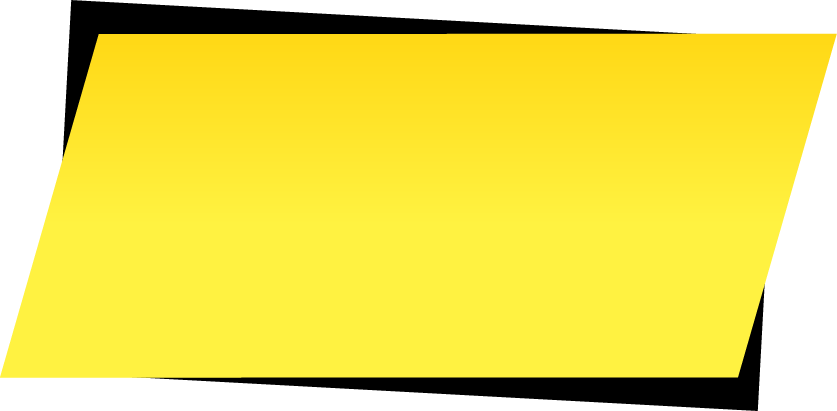

Meet John Roach - an ordinary bug surrounded by extraordinary insects. In the world of the Entoverse, being regular isn't something that one would covet. Yet, John Roach has the interesting habit of not staying down when the enviroment would much rather him do so.